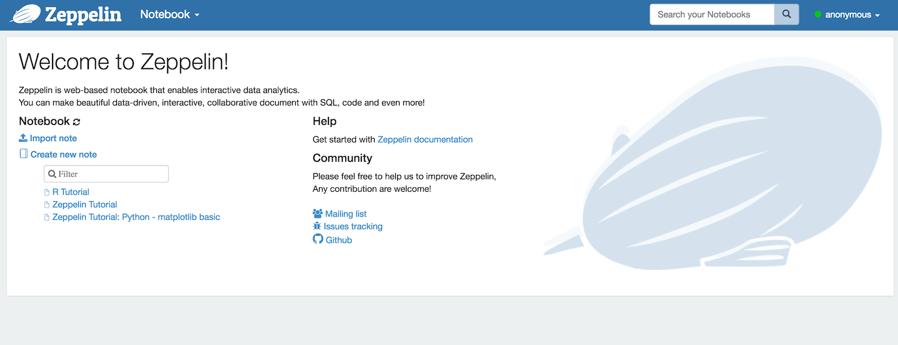
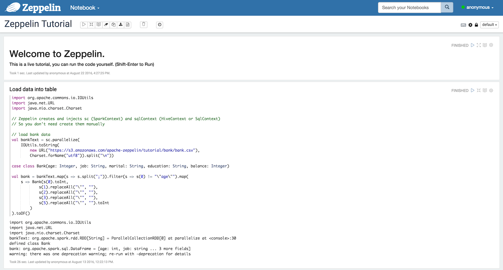
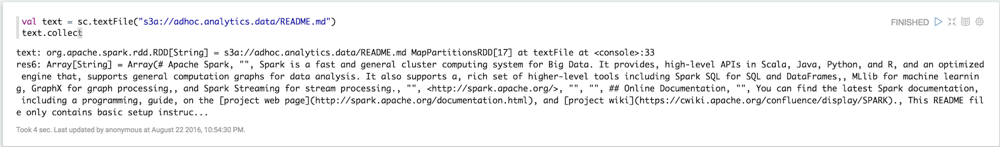

Building a Data Science Platform for R&D, Part 4 - Apache Zeppelin & Scala Notebooks
Posted on Mon 29 August 2016 in data_science

Parts one, two and three of this series of posts have taken us from creating an account on AWS to loading and interacting with data in Spark via R and R Studio. My vision of a Data Science platform for R&D is nearly complete - the only outstanding component is the ability to interact (REPL-style) with Spark using code written in Scala and to run this on some sort of scheduled basis. So, for this last part I am going to focus on getting Apache Zeppelin up-and-running.
Zeppelin is a notebook server in a similar vein as the Jupyter or Beaker notebooks (and very similar to those available on Databricks). Code is submitted and executed in ‘chunks’ with interim output (e.g. charts and tables) displayed after it has been computed. Where Zeppelin differs from the other, is its first-class support for Spark and it’s ability to run notebooks (and thereby ETL process) on a schedule (in essence it uses chron for scheduling and execution).
Installing Apache Zeppelin
Following the steps laid-out in previous posts, SSH into our Spark cluster’s master node (or use $ ./flintrock login my-cluster for extra convenience). Just like we did for R Studio Server we’re going to install Zeppelin here as well. Find the URL for the latest version of Zeppelin here and then from the master node’s shell execute,
$ cd /home/ec2-user
$ wget http://apache.mirror.anlx.net/zeppelin/zeppelin-0.6.1/zeppelin-0.6.1-bin-all.tgz
$ tar -xzf zeppelin-0.6.1-bin-all.tgz
$ rm zeppelin-0.6.1-bin-all.tgz
Note that I have chosen to install the binaries that contain all of the available language interpreters - there is no restriction on choice of language and you could just as easily use R or Python for interacting with Spark.
Configuring Zeppelin
Before we can start-up and test Zeppelin, we will need to configure it. Templates for configuration files can be found in the conf directory of the Zeppelin folder. Makes copies of these by executing the following commands,
$ cd /home/ec2-user/zeppelin-0.6.1-bin-all/conf
$ cp zeppelin-env.sh.template zeppelin-env.sh
$ cp zeppelin-site.xml.template zeppelin-site.xml
Then using a text editor such as vi - e.g. $ vi zeppelin-env.sh - to edit each file making the changes described below.
zeppelin-env.sh
Find the following variable exports, uncomment them, and then make the following assignments:
export MASTER=spark://ip-172-31-6-33:7077 # use the appropriate local IP address here
export SPARK_HOME=/usr/local/lib/spark
export SPARK_SUBMIT_OPTIONS="--packages com.databricks:spark-csv_2.11:1.3.0,com.amazonaws:aws-java-sdk-pom:1.10.34,org.apache.hadoop:hadoop-aws:2.7.2"
Most of these options should be familiar to you by now so I won’t go-over again here.
zeppelin-site.xml
Find the following property name and change it to the value below:
<property>
<name>zeppelin.server.port</name>
<value>8081</value>
<description>Server port.</description>
</property>
All we’re doing here is assigning Zeppelin to port 8081 (which we opened in Part 2), so that it does not clash with the Spark master web UI on port 8080 (the default port for Zeppelin). Test that Zeppelin is working by executing the following,
$ cd /home/ec2-user/zeppelin-0.6.1-bin-all/bin
$ ./zeppelin-daemon start
Open a browser and navigate to http://your_master_node_public_ip:8081. If Zeppelin has been installed and configured properly you should be presented with Zeppelin’s home screen:

To shut Zeppelin down return to the master node’s shell and execute,
$ ./zeppelin-daemon stop.
Running Zeppelin with a Service Manager
Unlike R Studio server that automatically configures and starts-up a daemon that will shut-down and re-start with our master node when required, we will have to configure and perform these steps manually for Zeppelin - otherwise it will need to be manually started-up every time the cluster is started after being stopped (and I’m far too lazy for this inconvenience).
To make this happen on Amazon Linux we will make use of Upstart and the initctl command. But first of all we will need to create a configuration file in the /etc/init directory,
$ cd /etc/init
$ sudo touch zeppelin.conf
We then need to edit this file - e.g. $ sudo vi zeppelin.conf - and copy the following script, which is adapted from rstudio-server.conf and this fantastic blog post from DevOps All the Things:
description "zeppelin"
start on (runlevel [345] and started network)
stop on (runlevel [!345] or stopping network)
# start on (local-filesystems and net-device-up IFACE!=lo)
# stop on shutdown
# Respawn the process on unexpected termination
respawn
# respawn the job up to 7 times within a 5 second period.
# If the job exceeds these values, it will be stopped and marked as failed.
respawn limit 7 5
# zeppelin was installed in /home/ec2-user/zeppelin-0.6.1-bin-all in this example
chdir /home/ec2-user/zeppelin-0.6.1-bin-all
exec bin/zeppelin-daemon.sh upstart
To test our script return to the shell and execute,
$ sudo initctl start zeppelin
And return to the browser to check that Zeppelin is up-and-running. You can check that this works by stopping the cluster and then starting it again.
Scala Notebooks
From the Zeppelin home page select the ‘Zeppelin Tutorial’, accept the interpreter options and you should be presented with the following notebook:

Click into the first code chunk and hit shift + enter to run it. If everything has been configured correctly then the code will run and the Zeppelin application will be listed in the Spark master node’s web UI. We then test our connectivity to S3 by attempting to access our data there in the usual way:

Note that this notebook, as well as any other, can be set to execute on a schedule defined using the ‘Run Scheduler’ from the notebook’s menu bar. This will happen irrespective of whether or not you have it loaded in the browser - so long as the Zeppelin daemon is running the notebooks will run on their defined schedule.
Storing Zeppelin Notebooks on S3
By default Zeppelin will store all notebooks locally. This is likely to be fine under most circumstances (as it is also very easy to export them), but it makes sense to exploit the ability to have them stored in an S3 bucket instead. For example, if you have amassed a lot of notebooks working on one cluster and you’d like to run them on another (maybe much larger) cluster, then it makes sense not to have to manually export them all from one cluster to another.
Enabling access to S3 is relatively easy as we already have S3-enabled IAM roles assigned to our nodes (via Flintrock configuration). Start by creating a new bucket to store them in - e.g. my.zeppelin.notebooks. Then create a folder within this bucket - e.g. userone - and another one within that called notebook.
Next, SSH into the master node and open the zeppelin-site.xml file for editing as we did above. This time, un-comment and set the following properties,
<property>
<name>zeppelin.notebook.s3.bucket</name>
<value>my.zeppelin.notebooks</value>
<description>bucket name for notebook storage</description>
</property>
<property>
<name>zeppelin.notebook.s3.user</name>
<value>userone</value>
<description>user name for s3 folder structure</description>
</property>
<property>
<name>zeppelin.notebook.storage</name>
<value>org.apache.zeppelin.notebook.repo.S3NotebookRepo</value>
<description>notebook persistence layer implementation</description>
</property>
And comment-out the property for local storage,
<property>
<name>zeppelin.notebook.storage</name>
<value>org.apache.zeppelin.notebook.repo.VFSNotebookRepo</value>
<description>notebook persistence layer implementation</description>
</property>
Save the changes and return to the terminal. Finally, execute,
$ sudo initctl restart zeppelin
And wait a few seconds before re-loading Zeppelin in your browser. If you create a new notebook you should be able to see if you go looking for it in the AWS console.
Basic Notebook Security
Being able to limit access to Zeppelin as well control the read/write permissions on individual notebooks will be useful if multiple people are likely to be working on the platform and using it to trial and schedule jobs on the cluster. It’s also handy if you just want to grant someone access to read results and don’t want to risk them changing the code by accident.
Enabling basic authentication is relatively straight-forwards. First, open the zeppelin-site.xml file for editing and ensure that the zeppelin.anonymous.allowed property is set to false,
<property>
<name>zeppelin.anonymous.allowed</name>
<value>false</value>
<description>Anonymous user allowed by default</description>
</property>
Next, open the shiro.ini file in Zeppelin’s conf directory and then change,
/** = anon
#/** = authc
to
#/** = anon
/** = authc
This file also allows you to set usernames, password and groups. For a slightly more detailed explanation head-over to the Zeppelin documentation.
Zeppelin as a Spark Job REST Server
Each notebook on a Zeppelin server can be considered as an ‘analytics job’. We have already briefly mentioned the ability to execute such ‘jobs’ on a schedule - e.g. execute an ETL process every hour, etc. We can actually take this further by exploiting Zeppelin’s REST API that controls pretty much any server action. So, for example, we could execute a job (as defined in a notebook), remotely and possibly on an event-driven basis. A comprehensive description of the Zeppelin REST API can be found on the official API documentation.
This is the point at which I start to get excited as our R&D platform starts to resemble a production platform. To illustrate how one could remotely execute Zeppelin jobs I have written a few basic R function (with examples) to facilitate this using R - these can be found on GitHub, a discussion of which may make a post of its own in the near future.
Conclusion
That’s it - mission accomplished!
I have met all of my initial aims - possibly more. I have myself a Spark-based R&D platform that I can interact with using my favorite R tools and Scala, all from the comfort of my laptop. And we’re not far removed from being able to deploy code and ‘analytics jobs’ in a production environment. All we’re really missing is a database for serving analytics (e.g. Elasticsearch) and maybe another for storing data if we won’t be relying on S3. More on this in another post.